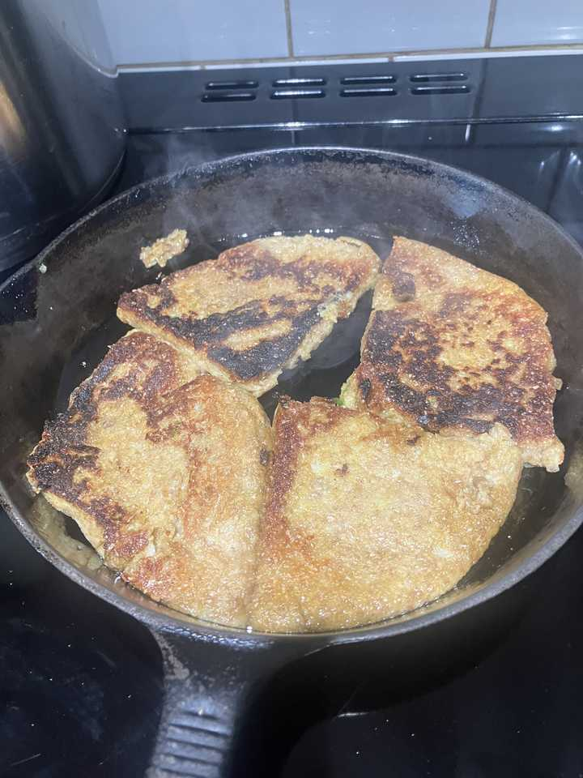

Aloo Scones

Boil 2 potatoes skin on
Mashin into about 1/2 cup wholemeal flour mixed with 1/2 Tspn baking powder, 1/2 tspn turmeric, 2 tspn cumin, salt, proper and 1 chopped green chillie. Roll out on floured surface and fry.
Love it with ginger pickle, baked tomato and kippers… Indian scrambled egg.